当人们在死亡边缘挣扎时，会发生濒死经验，很多时灵魂出窍是频死经验的其中一部份。当濒死者昏迷时，他们会感觉到自己脱离了自己的肉体飘起，然後是见到自己的身体以及抢救自己的医务人员。很多时在他们回复知觉後，都能够清楚地描述当时的情形。但那个时候，濒死者其实已被断定失去知觉，甚至脑部活动停止，但他们就是能够准确地说出在他昏迷失去知觉期间所发生的事情。 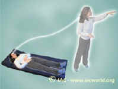 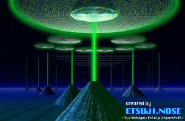 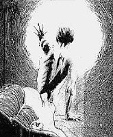 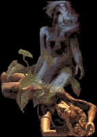 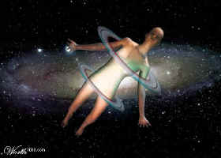 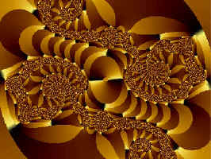 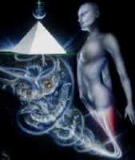 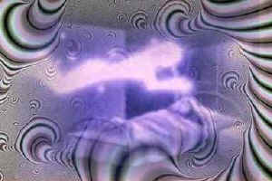 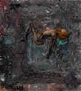 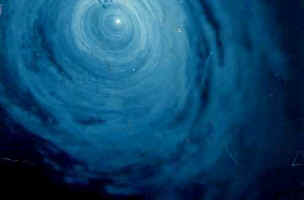 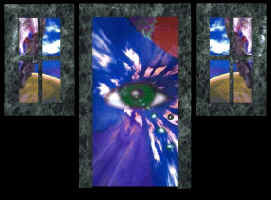 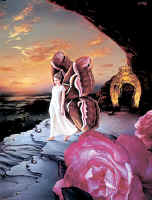 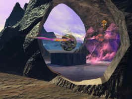 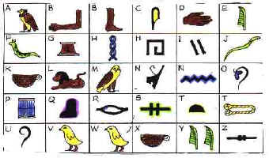 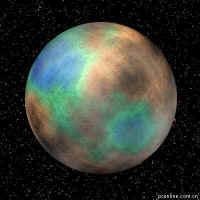 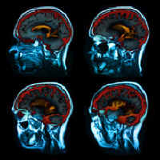 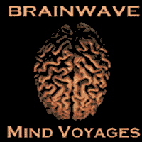 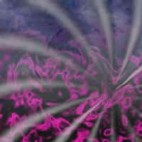
有些人练习冥想，气功，瑜珈等精神修练时，也会发生灵魂出窍现象。他们可以在出窍时去到遥远处看到那�Y发生的事情。
这个现象有时候也会自然地发生，据欧美方面的统计，全球约有四分之一人记得自己曾经在睡眠时有过灵魂出窍的经验。
这个现象多数是在睡眠的时候发生，出窍者多数会先发生鬼压床现象，然後才会经历灵魂出窍。
睡眠中的灵魂出窍是由於肉体比精神疲倦，所以肉体比精神更快地入睡，这个时候便是发生鬼压床的时候，即是头脑清醒而身体入睡。当肉体完全入睡之後，那个人的意识便有可能离开肉体活动了。
和普通发梦不同的是，灵魂出窍的人是完全清醒的，他可以清晰地思考，和清醒时一样接收外界的讯息，自由地控制自己的任何行动，而且行动会比清醒时更为方便。因为灵魂出窍後没有了肉体的限制，很多平时做不到的事情，都可以在灵魂出窍时做到。举例来说，你可以在出窍後飞，也可以穿墙过壁。
在欧美，有专门研究灵魂出窍的机构，对灵魂出窍作出科学性的研究，欧美方面称灵魂出窍作「出体经验」(out-of-body exp.)。
资料显示，出体现象是人类意识状态的一种。
而基本上，每个人都是可以灵魂出窍的。
灵魂出体通常是发生在睡眠中，究竟出体现象和造梦有甚�N分别呢？
事实上，有些古老的传说认为：每个人造梦时，其灵魂都会离开肉体到其他地方活动。所以有「不要在别人睡觉时画花别人面孔」的说法，原因是怕那个人的灵魂会不认得自己，而不能返回自己的肉体中。
有时在刚入睡而又马上醒来的情形下，有些人的身体会有一下急动。有时在梦中醒来时，会感觉到自己从很高的地方掉下来。那个时候，身体会感觉到强烈的离心力。
据说，这些都是由於那个人突然醒来，其灵魂突然由空中弹回自己的肉体所致。
部份研究者主张，任何人梦见自己飞行，不论是以自己的身体飞上天空还是乘搭任何交通工具。则那个人其实是经历了灵魂出体。原因是一般人没有灵魂出体这个概念，而实际上，一般人也不一定能接受自己曾飞出过自己的身体。
於是他们便会在潜意识中把那一次出体经验伪装成一个普通的梦境，但是在梦中飞行时所感到的离心力�S是非常真实的，而事实上，那真的是由於他们曾离开肉体并在高空飞行、打转所造成的。
除此之外，有一个现象比普通的梦境更接近灵魂出体的，那就是清醒梦了。
清醒梦又称为清明梦，意思是在梦中可以保持清醒，并且知道自己正在造梦。
有些人在造梦时会突然醒觉到自己正在造梦，当他知道自己在造梦时，他便可以控制自己的梦境。这便是清明梦了。
在清明梦中，你可以自由地控制自己的行动，也可以任意控制梦境的内容，甚至梦中的其他人也完全由你来控制。
也有部份研究者指出，清明梦其实是伪装了的出体现象。由於一般人的信念不相信自己可以离开自己的肉体而活动，所以心理上把自己的出体经验伪装成一个梦，当中的背景、人物、事件都像梦境般不真实。而造清明梦的人比起真正的灵魂出体会较为迷糊……
至於一直否定灵魂出窍的人士则指出：其实所有出体经验均是清醒梦或普通的梦境，而离开肉体活动则全是梦中的错觉或幻觉。
比较为多数研究者接受的说法是，梦、清明梦和灵魂出体都是人类的意识状态。三者的分别是焦点的深浅不同。焦点越深，你的经验便越清晰，也愈可以在醒来时清楚记得自己的经验。
灵魂出体和清明梦的分别：
1.可以清晰地思考
2.可以自由地控制自己的活动
3.清楚知道自己已离开自己的肉体活动
4.清楚知道自己离开肉体的过程
5.有可能可以见到自己的肉体(自己的肉体多数在睡眠中)
6.还有一点，普通梦和清明梦也较易被忘记，但出体经验�S非常清晰，不易被忘记。
我们的「意识」离开了我们的肉体後会见到甚�N呢？
而当我们在出体状态之下，又会进入一个怎样的世界呢？
现实世界又称为物质界，即是我们清醒时活动的世界，在物质界中每一样物件皆有实体，都有一定的耐久性。物质界中所发生的所有事件都可以被不同的人共同感知。
但当我们入睡之後，我们会发梦。在梦境中，物件皆没有实体，它们可以随时出现又可以突然地消失，梦境中所发生的事件只有自己可以感知得到。
发过清明梦的人会知道，他们可以在梦境中随时「创造」物件和事件，这些事情会随著造梦者的「思想」即时出现和发生。
这个梦中的世界有别於「现实世界」和「物质界」，可以称之为「非物质界」。
除了在造梦之外，我们在灵魂出体後，也会进入非物质界。
非物质界是灵体和意识体的世界，我们在灵魂出体後会自动地进入这个世界。
在不同人的出体经验中可以看到，非物质界的一部份和物质界重叠，我们在刚刚出体後，仍会见到物质界的境物，甚至可以见到自己正在睡觉的房间以及正在睡觉的自己。
但非常奇怪地，出窍者越离开自己肉体的所在地，他们会发觉他们见到的境物会变得越来越陌生。例如他们在出窍後去到一处他平时常去的地方，他会发觉那个地方的境物变得似是而非，例如原本应该有大厦的地方�S没有大厦了，原本没有天桥的地方�S有天桥。所有街道或城市的结构彷佛完全重新组合过似的。
到这种情况，我们只能感觉到那个地方是原本那处，但其境物�S和原本的地方有很大的分别。
以上所述是一个出窍者浅度进入非物质界的情形。
当一个出窍者的意识焦点够深时，他便有机会完全地进入非物质界。出窍者会发觉自己进入了一个黑漆漆的地方，在下一刻，他会出现在一个完全陌生的地方。这次去到的是一个完全未见过未到过的地方。
那个地方可能是一个城市，可能是郊外，也可能是在太空中。你会直觉地知道∶那个地方并不是地球上的任何一处实质存在的地方。那个地方完全和地球不同，例如那�Y的大厦全部都是圆形的，例如那�Y的树木全部都是尖的，例如那�Y有可能有两个太阳或两个月亮等。
在非物质界中也有其他人存在，不少出窍者在自己的经验报告中提到在出窍时见到很多不同的人，那些人像我们现实中碰到的人一样。我们可以和他们沟通或接触。
不同人有不同的想法，有些人想在出窍後能够留在物质界附近，在物质界四处游览。也有些人希望到非物质界的地方，看看那�Y非常特别的境物。
不过，我们出窍的时间一久，便很容易自动地进入非物质界。这是由於我们出窍後脱离了物质性的肉体，所以较难留在物质界附近。
1.出体前最好不要做太激烈的活动，尽量保持身心的平静。太紧张导致心跳太快正是最常见的失败原因。
2.练习出体前，不宜吃太饱。和一般的气功或冥想一样，最好在练习前一小时不要吃东西。
3.不要喝太多水，并且在练习前先去厕所。很多人在出体後感到要去厕所，结果唯有被迫中断了出体状态。
4.出体前最好不要看恐怖电影或小说，虽然出体和发梦不同，看到的是较为真实的景象，但出体後很多时仍会见到自己幻想出来的东西，这些东西我们通常称为「幻象」或「心象」。如果大家不想在出体後见到可怕的东西，就不要时常想像或者在平时看太多这些东西了。
5.最好在第二天是放假或不用早起床的日子才练习出体，因为你或会因此而失眠或精神欠佳……
灵魂出体对多数人来说，最大的疑问应该是出体後会不会不能回来？现在我们便来谈谈回到肉体的方法。
一般来说，每次灵魂出体会在三十分钟之内完结。当完结时，出窍者会自动地回到肉体，然後醒来。对很多初学者来说，出体比回到肉体更难得多，很多时，出体不到一分钟便因太过紧张或太过兴奋而自动弹回肉体之内。
如果在出体中途想以自己的意志回到肉体，方法也很简单。就是在出体状态中设法郁动自己的真实肉身。例如不停地眨眼，这样很容易令你自己真正肉身的眼睛也真的眨起来。当你的肉身在动时，你会马上弹回肉身内并马上醒来。过程真的说那�N快就有那�N快。除了眨眼之外，尽量郁动自己的手指也是可以的。当你真的郁动到自己的手指时，你会感觉到自己的肉体。很容易便可以使自己醒来了。
如果还是担心会回不到来的话，也可以在练习出体前在床头放一个闹钟。把时间调较到四十五分至一小时之後响起来。这样的话，时间一到闹钟便响，不论你正在出体还是睡著了，也会被闹钟闹醒。
既然很多专家把出体经验当成一个特别的梦境，那�N出体後剩下来的肉体，其状态实在是和我们平时睡觉没有太大分别的（据脑波分析显示，的确没有太大分别）。如果说，有人会担心出体後不能回到肉体或不能醒来，其实即是担心睡觉发梦後不能醒过来，应该很少人会这样吧？
练习灵魂出体是不是就只为了能够飞来飞去呢？究竟灵魂出体有没有甚�N特别的意义呢？现在和大家分析一下：
1.为了兴趣而出体
只要想一想可以凭自己的意志用自己的身体来在空中自由飞翔，或者能够不受时空限制於世上任何地方旅行，甚至能旅行到从未有人到过的异世界、异空间。而这些都是能亲身经历的(去旅游也只是为了经历罢了。)，这已经可以吸引到一些人(包括我自己)去尝试了。
「灵魂」、「意识体」可以离开肉体四处探索这件事本身，对个人或是对宗教或是对所有生物来说，意义可以说是非常重大的(对不关心这些事的人当然不太重要)。哲学上所关心的意识不灭、生命意义等问题(关於这些，请参考有关新时代的部份。)也有可能在此得到一些启发。既然就个人经验而言，意识、灵魂可以离开自己的肉身而独立存在，那�N在人死後，意识也不一定会完全消失。或者情形和出窍一样，人可以在死後以「意识体」的方式存在或生活?很多人都会在经历出体经验後重新思考这些问题。
部份人的经验报告指出在出体活动後会感到特别精神，原因是意识体、灵魂在非物质界能得到所需的能量(非物质能量)。而平时我们进行普通的睡眠和造普通梦的功效也是为了让意识得到这些能量，而在出体状态下则能吸收到更多。(要注意的是，也有人说出体後会觉得疲倦或睡不好，这个情况是因人而异的。)
在出体状态中会大量使用潜意识或全意识运作(其实平时我们思想所使用的显意识只占全部意识的一小部份)，在出体後我们有可能把潜意识的记忆或知识带给自己的显意识，使自己清醒地知道这些知识，而据说，我们平时造梦，即是潜意识的记忆和知识在梦中传递给我们。在出体状态中，我们则可以直接地「回忆」或「思考」这些有用的潜意识资讯。
出体时我们把物质性的肉体留下来，只以我们的意识来活动。不依赖肉体的活动，让我们的意识得到锻��。这样做，可以使我们的意识增加了弹性，有机会使意识本身的能力发挥出来。使我们的直觉、灵感、预感、创造力可以更好地使用。
16楼
突发事件
在出体中可能发生以下事件，这些事件大多不会构成真正的危险，但多数人遇到时都可能会感到害怕或惊吓。其实大家只要保持镇定，到真的觉得有问题时，紧记著我们还是可以用〔回到肉体的方法〕回来的。只要够镇定的话，即使遇到突发事件也不用害怕的。
在出体时遇到其他「人」
灵魂出体後，你可能留在物质界附近，也可能会进入了非物质界。你可能在出体状态下见到不同的「人」，如果你是初次尝试出体的话，奉劝你暂时不要与任何出体遇到的「人」接触。你不去理会他们，他们也不会主动接触你的。
有部份资深的出体人士出体是为了与非物质界的朋友见面或接触(甚至超渡亡者)，但初学者还是等到有更多经验才做这些事情较好。不论他们被你吓到或你被他们吓到也不是太好的。
出体後遇到的人大致包括了以下四种：
1.造梦者：他们是正在睡觉和造梦的人，他们的意识显得蒙蒙胧胧的。即使你和他们接触，他们在醒後也未必会记得你或者认为那次接触是一个梦。
2.出窍者：和你同样在出体状态的人，但是几乎不会遇到。事实上，能够以自己意志作灵魂出窍的人少之又少。
这情形不常发生，有人在其出体报告中提到，他们在飞近电缆或发电设施时会被其吸引过去。这令他们很难控制自己的飞行方向，甚至有人被「引力」吸到电缆处，不能飞走。
真的遇到这种情形也不用紧张，在这种情形下，[回到肉体的方法]仍然可以有效运作。而大多时候，你的害怕和恐惧已可能足够让你弹回肉体并醒来了。
其实这是出体时常见的现象，多数资深的出体人士都会试过，不过新手遇到的话则可能会不知所措。
情形是当你在出体後，有时会感觉到自己在高速地向某一个方向高速地飘去，而这种情形发生时你是多数不能够控制自己的，你会一直飘行直到身体自行停下来。
当你停下来时，你会发然自己身处一个完全陌生的地方。
有时候，这种高速移动发生时，会使你进入一个完全黑暗的空间。而你会感到自己在一条黑暗的隧道�Y不由自主地高速移动。
发生这种情形的时候也不用太惊慌，你只要冷静地等到自己停下来便可。又或者在高速移动时使用〔回到肉体的方法〕以自己的意志醒来也可。
其实这种情形便是出体後的其中一种能力「瞬间移动」。
在出体时，我们有时会在无意中启动了这种能力。而在穿过了黑暗空间之後，我们通常会完全地进入了非物质界。那是一个对我们来说完全陌新的地方。不过，即使我们去到甚�N地方，我们仍然和物质界之中我们自己的肉身有无形的联系，所以我们还是可以随时用〔回到肉体的方法〕回来的。
对多数人来说练习灵魂出窍不一定都能够立刻成功的，当然有些人会在无意中出体，但要刻意地做时往往不容易成功。有兴趣尝试的朋友可多作几次尝试，以及参考一下其他人的经验报告。基本上每个人都是有机会成功的。
飞行
这是最基本的能力，当你出窍後你必定会尝试到的。可能你在清醒时曾试过乘搭飞机，但是出窍後以自己的身体（灵体／梦体）飞行，那种感觉是完全不同的，或者在头几次的经验�Y，你会感到自己不受控制地向上升，并害怕会坠地，不过当你有更多经验之後，你便会去控制，而且你的飞行技术会越来越好，你可以尝试不同的姿势飞行，也可以尝试不同的空中花式，当你在空中转体或急速飞旋时，相信世上最快最新的机动游戏也不及这个刺激……
在出体状态下飞行并不用控制自己的手脚或身体，而是要靠你的思想来令自己飞行。当你想飞起来时，便要在心中想著：「要向上飞！」而虽要转方向时也是如此以思想来操控。在初时，你可能虽要在心中叫唤多次才会有效果；但当你熟习这种方法之後，你是差不多不用想或者一想到便可以飞到任何方向，灵活非常。
这也是基本的能力之一，如果你是在房中出窍而又想到外面去逛逛的话，你便有需要离开你的房间了。不过，你是不能够打开房门出去的，因为你在出窍状态�Y是不能移动任何物质界的实物的，於是你便唯有穿墙而出了。起初你可能会很怕去穿墙，因为这是从未试过的经历，而你则可能会在心理上害怕会撞到墙壁或房门而受伤。在初次尝试时，你可以合上双眼穿过去，你也可以跑几步冲过去，感觉上或者会经过少许阻力，又或者在撞上墙後要过一会才能完全穿过去。但也有些人是无论怎样也穿不过去的。很久以前，我也曾有这个问题，但是在穿不过去的时候，我望著房门发呆，突然我发觉门自动开了，而我也从房门走出去了。
其实，那个房门在现实世界中由始至终都是没有打开过的，但我希望它开门让我出去，便令自己感到它开了，其实那次我的确是穿墙而过的，�S在心理上骗自己是开了门过去，好让自己安心并在不知不觉中穿墙而过。经过多年的经验，现在我已能很轻易地穿墙了。
可能很多人有过出体经验但�S不知自己在出体状态下拥有透视能力。其实在出体状态中你只要望著想望穿的墙壁，在心中命令自己：「我要望穿过去！」，你便有可能透视过去了，这时，你或会望见墙上开了一个洞让你望穿过去，又或者，你可能会发觉整块墙壁消失了让你毫无阻隔地看穿过去。我自己试过是可行的，不过既然自己也可以穿墙而过，那�N，透视能力其实也没有太大的实用价值的了。想看甚�N便自己穿墙过去看好了……
这个活动好像很普通，不过以出窍状态到处逛是和在现实生活中大不相同的，尤其当你在白天出体後到街上逛时，所有人都像见不到你一样，而你也可以随时走入其他人的房子去，甚至连续穿过不同人的房子，你会看到很多不同的人和不同的东西，你也可以随时飞起来，在空中俯视平日熟悉的街道。或者也可以在这时去你朋友的家（如果你去得到的话），看看他在做甚�N事情……
27楼
向上飞
要不断向上飞可以有几个目的：
1.飞出地球，到外太空去看看。
2.去看看传说中的天堂或天空城等地方。
3.穿过这个层面到异世界探索。
如果你要这样做的话，你一定要不怕高才行。如果能一直不断的向天空飞行，或者会有些前所未见的景物吧，例如其中一些出窍人士便曾在高空见到一些巨形邮轮了（这在一些出体的资料中有提及过，是来自其他层面的访客的交通工具……）
向上飞之後是向下沉，试试一直向地深潜去，你要想著你是可以穿过地底的，而在心中命令自己：「向下潜去！」同样你可能会感到害怕而做不到，和向上飞不同，向下潜去通常是到另一个层面探索的方法。当你向下潜行了一会後，你或会感到自己穿过一些隔层，之後你会发觉你在另一个世界著陆了，你可能会见到一些既熟悉又陌生的景物，例如那�Y可能有大厦，但�S不是任何一座你见过的大厦，那�Y可能有些像商场的地方，但�S不是任何一个你所认识的商场，那�Y的人可以见到你，你也可以尝试和他们沟通一下。
这是出体状态不受时空限制的证明。在出体状态中，在心中想著你想见的人或地方，最好不要只想著那个人或那地方的名字，要很清晰很详细的在心中描画出那个人或地方的外貌，甚那个人或那处地方给你的感觉，越清楚越仔细越好。然後在心中命令自己：「我要到那�Y去！」或「我要找他！」成功的话，你或者会经过黑暗空间或穿过一条黑色的隧道，然後在下一刻便到了那个地方或去到那个人身边。也可能在一眨眼的时间後便突然出现在你想去的地方……
1.天堂
传说中的天堂，据门罗的灵魂出体所述，部份持有关信仰的人在死後会到达该处。天国在云层之上，那�Y居住的意识体都在等待上帝的到来，可是情形�S不如他们想像的一样……
赛斯与他的学生们以意念集体创造出来的空中城市，在一条围绕地球的轨道上飘浮。由於集体意识的特性，这个空中城市应该是永远存在的(存在於非物质界。)在那�Y有古老的巨石建筑物、街道、剧院等……
在非物质界的这个地方，时常停泊著不同层面来的探访者的交通工具。各式其式都有：有巨大的圆锥体、有豪华邮轮、当然也有碟状、雪茄状等传统UFO形状的东西。据说，不同人类从古到今所目击的UFO，多数是他们偶然地在物质界的显现……
在非物质界的某处，有一些奇怪的古文字定在半空之中。传说在远古时，在灵界有一个女人，她希望她的儿子能够到天堂生活，於是她把钱(或灵界中有价值的东西)给了相关的负责人。但到最後她�S得不到应得的服务，於是她便用她所有的金钱在天空中弄出了那些文字，以抗议这件令她极为不满的事，而那些文字是无论用任何方法都不能弄掉的。时至今日，已没有人知道那些古文字是甚�N意思了……
在非物质界中有很多不同的围圈，每个围圈其实即是一个小形的世界。拥有相同信念的亡者或意识体会聚在一起，在非物质界中建立他们的世界，这样的世界一旦建立了，便会一直存在不会消失。而这些围圈的存在是为了给以後来的有著同样信念的亡者或意识体所使用的。
在不同的围圈中，当然有中国人的世界。在那�Y，我们会见到中国古代的景物或古色古香的中国建筑；又或者是奈河桥、阎王殿等中式地狱的设施；也有可能见到牛头马面或阎罗王之类的人物。
这领域最好是在熟练瞬间移动之法後才去，事实上，部份关於出体经验的书籍的确有出体後探索其他星球的记载。到底其他星球是甚�N样子？或者我们的出体经验可以让我们得到部份答案……
究竟灵魂出体是不是真的？还是那些经验其实只是一个迫真的梦境？
这个问题差不多每个星期都会在「灵魂出窍新闻谷」中出现，现在大部份的科学家都仍然否定灵魂的存在。但是对於人类灵魂的研究�S每天都有科学家在做。
或者有一天，真的会有其中一位科学家，会站出来宣布他能证明人类灵魂的存在吧？
在此，先来介绍一下对於灵魂出体现象的各种科学研究吧。
出体的真实性
本段参考「超自然经验与灵魂不灭」及「灵魂出窍奇谭」
既然「灵体」、「意识体」并不留在物质界，那�N，现在科学界所使用的，针对物质界而使用的各种仪器，应该都不能对「灵魂」起作用。於是，部份的科学家怀疑灵魂的真实性，但是，我们仍有不少科学家在不断研究，试图找到证明灵魂存在的方法。
其中一种是观察灵魂出体的真实性。
观物实验
他们会找来一些自称能够出体的人，然後为他们的灵魂出体能力进行各种测试。
早期验证出窍经验之「分身」现象的实验，是将一个数字或图形放置在实验室�Y的一个架子上，受测者则睡在架子的下方。虽然受测者全身都接著各种电线和监测仪器，实在很难入睡，可是他还是能够叙述自己脱离身体，升到上方架子的位置看到数字或图形。
现在则有更为严谨的实验方法，例如欧西斯(K.Osis)设计了一种盒子以测量出窍的情况。这些盒子放置在距睡著的受测者有一段距离的地方，以排除潜意识反射的可能。有时候还用镜子和镜，以扭曲外在观察者的形象。如果此形象正确无误(未受扭曲)地被看见，则可能表示主体可以直接透视；如果出现的是扭曲过的形象，一如肉眼由某个位置所见，则表示光线是由某个特定的位置(在肉体之外)被观察到的。其他的盒子有时会指定号码，号码是由机器随机选定的，以免任何人的心灵在出窍经验结束之前预先知道正确的答案。
事实上各位如果能够成功出体的话，也是可以自行做类似实验的，例如在预备出体前闭上双眼抽一张纸牌，把牌放在床边的地上。在出体後第一件事便去看看那是甚�N牌，到回到肉体後再去看看是不是出体时看到的牌。
除了验证出体能力的确实性之外，部份科学家则研究出体人士在进行灵魂出体活动时的脑波以及眼球活动状态。
现在我们知道每个人在睡眠时都会交替地出现两种眼球活动状态：
1.眼球快速活动状态以及
2.眼球静止状态
研究指出，人类在造梦的时候，会出现眼球快速活动，而造梦的脑电波(比清醒时较为平稳)也会在这个时候出现。
当睡眠中眼球呈静止状态时，表示这个人正在沈睡而没有造梦，他的脑波也会比造梦时更平静。
每个人在睡眠时均会交替地出现这两种状态，而每晚睡眠，我们都一定会造梦四次或以上。只是大多数时间我们都只会记起我们临醒来前的最後一个梦。
科学家尝试用脑波图来研究出窍和脑部活动的关系；塔特(C.Trat)的研究指出「出窍现象和平缓的脑波图相伴发生，显示脑部活动明显，但眼球并没有快速动作。此亦为睡眠或昏沈状态的表徵。」
密契尔(J.Mitchell)的脑波图观察所显示阿尔法波(由大脑皮层枕部发出的电流)也是较平缓的波动，但电流的「量」比较少。其他也有研究显示缓慢的阿尔法波、皮肤电阻降低、临睡前的昏沈状态，或在第二级睡眠状态之平缓阿尔发脑波间出现的突起，这些都是会出窍的人在实验中最常出现的情况。
这些脑电波及眼球活动状态的研究报告是极其重要的，因为它指出人在既非造梦、也非正在感知任何体内活动的情况下，也可能会有出窍经验。他们可以醒过来告诉其他人他的经验，而科学家可以检测这些经验并没有任何生理功能与之相符应。这些证据可供我们推论意识并非像平时一样「在肉体之内」或「与肉体相联」。在此经验主体的心理状态，应该比他肉体的生理状态更重要。
有人认为对人气进行研究，有助於为出窍经验脱离身体的状态提出另一种标准。如果有某种「气」在出窍时确实离开了身体，或者此「气」和旁人看到那阵轻烟或那道光相符合，也许我们可以臆测这种人气是和「意识体」、「灵体」密切相关。
首先对人气进行研究的是伦敦圣多玛斯医院的克霖纳(W.kilner)医师，他透过某种特殊的萤幕观察裸身的病人，发现这种气在离病人身体数英尺的地方萦绕，而且这种气还依病人的健康情况而有所不同。
前苏联阿玛塔大学的赛扬(Semyon)和克里安(V.Kirilan)医师，进一步研发了以摄影方式观察人气的技术。许多摄得的影像都是以克里安名字命名的。加州大洛衫矶分校罗斯(T.Ross)教授和学生庄臣(K.Johnson)则提升了在高频电场内拍摄物体的技术。这些照片�Y有各种形状和颜色的光晕，拍摄的对象有人也有植物，而光晕的颜色和大小则主要随著被拍的人的情绪和被拍摄的植物的健康情况而发生变化。
不过目前这种实验还未完全成功，而关於气的研究也还未能对出体现象提出最有力的证据。
除了研究出体的真实性之外，另一项研究便是「是否可以以科学的方法令人做到出体经验？」
既然出体现象和特殊的脑波状态是有关系的，或者我们可以用科学技术令脑部产生特殊的脑波，从而做到出窍状态。
如若能重覆地使人得到同样的经验，出体的真实性或许便能由此而验证得到了。
脑波的不同状态
或者我们先来看看人类脑波的各种不同状态所代表的意思吧：
α波状态(8-14赫兹)
在这种状态下，人的意识清醒，但身体却是放松的，它提供意识与潜意识的桥梁。由於在这种状态下，身心能量耗费最少，相对地脑部所获得的能量较高，运作就会更加快速、顺畅、灵感及直觉敏锐，脑的活动活泼。
β波状态(14赫兹以上)
人清醒时大部份的脑波状态。随著β波的增加，身体逐渐呈紧张状态，准备随时因应外在环境作反应。大脑能量除了维持本身系统的运作外，尚须指挥对外防御系统作准备，因而消减了体内免疫系统能力，在此状态下人的身心能量耗费较剧，快速疲倦，若没有充份休息，非常容易堆积压力（这是现代人的通病）。然而，适量的β波，对积极的注意力提升，以及认知行为的发展有著关键性的助益。
θ波状态(4-8赫兹)
在这种状态下，人的意识中断，身体深沉放松，这是一种高层次的精神状态，也就是我们常听到的「入定态」。在这样的状态下，由於意识中断使得我们平常清醒时所具有批判性或道德性的过滤机制被埋藏起来，因而大开心灵之门，对於外界的讯息呈现高度的受暗示性状态（Hyper-suggestibility），这就是为什�N人在被催眠时会容易接收外来的指令。此外，θ波与脑部边缘系统有非常直接的关系，对於触发深层记忆、强化长期记忆（LTP）等帮助极大。
δ波状态(0.4-4赫兹)
深度熟睡状态，无意识状态。人的睡眠品质好坏与δ波有非常直接的关联；δ睡眠是一种无梦且很深沉的睡眠状态，通常一夜正常的睡眠周期会出现四至五次，而发生在睡眠初期第一个出现周期是无梦的δ波（Non-REM）状态。此外，根据科学研究，δ波亦是开发人类直觉雷达系统，以及超能神密力量的关键。
出窍状态一般会在θ波状态与δ波状态之间出现。
本段参考「灵魂出体」及「灵魂出窍奇谭」。
双脑同步技术是一种声波技术，把这种声波加到音乐中，可以使人达到不同的意识状态。双脑同步技术的应用范围非常广泛，应用双脑同步技术的音乐，可以治疗头痛以及各类痛症、治疗长期的失眠、治疗长期的心理压力、帮助人们在学习时集中注意力、帮助人们进入放松的状态，而最此项技术最初的用途，是帮助人们进入灵魂出体的状态。
双脑同步技术是由灵魂出体的名人罗拔．门罗所开办的门罗实用科学院所开发出来的。门罗实用科学院的主要研究项目，是人类的各种意识状态。其实便是一所专门研究灵魂出体现象的研究所。
双脑同步技术最初是为了使参与灵魂出体实验的参加者能够进入放松而保持清醒的半睡眠状态。在使用了各种方法之後，他们开始使用音响，於是他们发现了「频率後反应」。这种反应使试验者长期在清醒与睡眠之间保持某种意识状态。他们发现到，要是让试验者听某种音律，那他的脑波也会显示类似的电波反应。如果控制试验者的脑波频率，试验者会比较轻松、保持清醒或进入睡眠状态。
在一九七五年，门罗实用科学研究院获得双脑同步技术的专利权。
经过轮流交替使用不同的有效频率後，科学院开始发展出几种声音频率的总合系统。这系统会产生「频率後反应」，极有助於出体经验和其他特殊的意识层次。其中自然有一种使试验者进入冥想阶段的有效方法。
「双脑同步技术」可以使人类能同时使用左右脑，这种方法使用非常容易，也不需要长期训练，而且使用的范围也颇广泛。
这种「双脑同步」过程，是以声音促进左脑及右脑同时达成一种相似的脑波。这也是说，我们耳朵听到某种声音讯号时，我们的脑子也会以类似的电波讯号来反应或发出共鸣。又因不同的脑波代表了我们在睡眠或清醒时的意识状态，所以我们可以听某种声音，即可令脑子进入相同的意识状态。
我们的左耳和右耳，因为经过交叉神经，所以各自将讯号送达至不同的脑部。譬如右脑收到左耳的讯号；左脑收到右耳的讯号。所以，在两耳各自收到不同的声音振动时(用耳机分离两耳收听的讯号)，我们的左、右脑在这时会一致听到第三种声音。这第三种声音与两耳收到的讯号又不相同。举例来说，如果一个耳朵听见指数为一百的声音，而另一个耳朵听见指数为一百二十五的声音，那时你的脑子发出的讯号只有二十五，而且那也不是一种真正的声音，只是一种电子讯号，只能在两脑同时共同发挥作用时才能产生这种讯号。这种讯号的频率很窄，但振幅和力量�S是一般脑波电图的两倍。
假设这种指数为二十五号讯号，会产生一种意识状态，那�N两个脑子也会同时集中於同一意识状态。最重要的是，意识状态会随声音任意改变。而且，这种意识状态可视你的需要从记忆学习或再创造。
现在，门罗实用科学院已经把其研究成果――加入双脑同步技术的音乐，录制成ＣＤ推出市面发售。有兴趣购买的人可到有售卖新时代产品的商店购买，一般卖ＣＤ的商店是买不到的。另外也可以在双脑同步音乐的官方网站选购，网址是www.hemi-sync.com
Brain Wave Generator是一个电脑程式，它有著和双脑同步技术十分相似的功能。同样是在左右声道发出不同频率的声波，以影响脑部产生不同的脑波，使人达到所需要的意识状态。
Brain Wave Generator的试用版可以让你选择不同的预设频率，声音大概是非常轻微而连续的呜呜声，程式内建的廿八种预设频道有各种不同的效果，这些效果包括：放松、冥想、帮助睡眠、使头脑清醒、增加集中力、增加学习专注力、提高创意等。程式提供不同的背景声音选择，背景声音通常是一些大自然的声音，例如下雨声、雀鸟声、河流声、海浪声等。
除了使用程式本身的预设频率外，还可以为程式加入其他不同的预设频率，但加入额外频率的功能是需要付钱注册才可以使用的。
在Brain Wave Generator的官方网页中，有一个Preset Library，入面有各种不同的预设频率供使用者免费下载，其中便有出体经验的类别，入面全是不同的人设计来帮助使用者进入出体状态的预设频率，总数达数十种。新闻群组的网友试用之後，发觉也有不错的效果，部份人的确在使用後达到了出体经验。
程式还可以输出.wav声音档案，方便使用者烧录成CD或压成MP3档案使用。官方网页声明，压成MP3档案後，Brain Wave Generator所输出的特殊声波功效不会被减弱或改变，可以放心使用。
Brain Wave Generator官方网站的网址是www.bwgen.com
除了Brain Wave Generator之外，网上还可以找到很多同类形的软件，功能和原理大都差不多，有兴趣可以在网上找找看。
Q：我会在进行「出体经验」後不能回来吗？
A：不会。事实上，从来没有任何人出体後不能回来的正式医疗记录。在欧美方面的大规模研究及实验中，也从来没有收到过关於这方面的报告。
Q：出体後如何回来？
A：见回到肉体的方法。
Q：进行「出体经验」会不会有任何不好的副作用？
A：并没有任何严重的副作用。要注意的是，初次尝试出体的人，可能会因为整晚不能入睡而导致疲累。
Q：进行「出体经验」会不会容易招惹鬼魂？
A：不会。一个人是不是容易招惹鬼魂，和出体经验并没有关系。有些人很容易招惹鬼魂，但他们对出体经验完全不认识。我们目前也没有收到任何人因为进行「出体经验」而招惹鬼魂的记录。
Q：在进行「出体经验」时，我的身体会变成一个空壳吗？
A：不会。在进行出体经验时，身体会呈现类似「睡眠」的状态，呼吸、心跳、新陈代谢都仍如常进行。
Q：在进行「出体经验」时，我的身体会被其他「灵体」入侵吗？
A：不会。我们目前没有找到任何这方面的正式记录。而一个人是否被其他灵体入侵，和进行出体经验并没有关系，有些人在清醒时被其他灵体入侵，而他们对出体经验完全不认识。
Q：出体後其他灵体会伤害出体时的我吗？
A：不会的。出体时，我们并不会受到任何伤害，而且，我们在任何时候都可以使用回到肉身的方法回来。
Q：出体看到其他灵体怎�N办？
A：如果你是初次尝试出体的话，奉劝你暂时不要与任何在出体时遇到的「灵体」接触。你不去理会他们，他们也不会主动接触你的。有部份资深的出体人士出体是为了与非物质界的朋友见面或接触(甚至超渡亡者)，但初学者还是等到有更多经验才做这些事情较好。不论他们被你吓到或你被他们吓到也不是太好的。
Q：所谓「鬼压床」状态是真的被「鬼魂」所压著吗？
A：所谓「鬼压床」状态和「鬼魂」完全没有关系。鬼压床是指「头脑清醒而肉体完全入睡」的状态，医学上称这种现象作「睡眠麻痹」。一般人在非常疲累的情况下睡觉都会很容易出现这种现象。
Q：我们必须要经历鬼压床状态才能进行「出体经验」吗？
A：鬼压床状态是进行出体经验的其中一种方式，对於一些较有经验的出体者，他们在出体前并不一定会经历「鬼压床状态」。
Q：甚�N是清明梦？
A：清明梦的定义是「梦中知梦」，即是在造梦时知道自己正在造梦。
Q：甚�N是梦中出体？
A：在确定自己正在造梦之後(清明梦)，我们可以把这一个清明梦转变成出体经验。基本上，在清明梦中有「出体经验」的意识，你的清明梦就已转变成「出体经验」，这是一种意识焦点的转变。
Q：在鬼压床状态中如何进行出体经验？
A：放松及等待，到完全不能感到肉体的存在时，尝试慢慢坐起身来。或尝试在心中命令自己浮起来。
Q：我的出体经验都很短暂，有没有方法可以使经验维持长时间一点？
A：在出体状态中不时留意自己的意识焦点，当感觉到自己意识模糊时，可以在心中提醒自己「要清醒一点」或在感到自己看到的景物开始变模糊时提醒自己「要看清楚一点」。另外，也可以为自己设定一些提示动作，例如「举起自己的手来看一看」，在出体状态中不时做一下，也有助维持一个较长时间及较清醒的出体经验。
Q：我在出体後进行「看牌实验」，但每次结果都不太准确，为甚�N？
A：我们平时观看物件是使用肉眼的，在出体後我们没有肉眼，直接地用心灵去感知。故此很多时我们在出体时所看到的情境会和在现实世界中以肉眼观看的有所不同。尤其对於例如纸牌或文字这类细微的东西上。
Q：我照著各种方法练习了很多次也无法出体，为什�N？
A：基本上每个人都能够出体，至於需要多少时间练习才能成功，则因人而异，若真的对出体经验感兴趣，不妨慢慢来，不断尝试，必定有机会成功的。
Q：出体後是否能够去到任何地方？
A：理论上是可以的。当然，你需要有一定的经验及熟练的技巧。
Q：出体後能否接触到现实世界的人？
A：答案是否定的。由於出体後我们身处不同的空间，我们不能和现实世界的人发生接触，也不可以接触或移动现实世界的物件。
Q：尝试出体经验是否需要天份？
A：基本上每一个人都具有出体的天份，虽然有些人需要较长的时间才能成功，而另一些则较容易成功。人的潜能没有限制的，除非你为自己设下界限。
Q：一般需要练习多久才能成功出体？
A：平均来说，认真地练习的话，三十天之内应该可以第一次成功。
Q：为甚�N要出体？
A：见灵魂出窍的意义。
Q：出体对自己有甚�N好处？
A：见灵魂出窍的意义。
Q：出体时不受控制地向著某个方向飘移，怎�N办？
A：这是初次出体或自动出体时常见的情形。遇到这种情形时，我们可以保静镇定，在心中命令自己「停下来」。尝试数次应该可以使自己稳定地停下来，跟著我们便可以尝试活动一下，尝试控制自己的行动。
Q：出体後发觉眼前漆黑一片，完全看不到东西，怎�N办？
A：我们可以在心中发出命令：「要变光亮！」或「要看见东西！」
尝试数次後便会有效。
Q：出体被困屋子里走不出来，怎�N办呢？
A：我们可以尝试穿墙出去，如果因心理的障碍而不能成功穿墙而过的话，我们可以合上双眼，伸出双手，慢慢一步一步地向墙壁行过去，预计自己和墙壁的距离，当估计自己已完全穿过墙壁後才再次命令自己看到东西。
Q：出体经验和造梦有何分别？
A：出体经验具有以下的特点：
a.脑波呈造梦状态而没有出现眼球快速活动(R.E.M.)
b.清醒地感到自己离开肉体
c.清晰的思想
d.自主控制行动
e.记得自己的出体过程
d.有可能从外面见到自己的肉体
e.醒来後很清楚记得自己的出体经验。
Source: http://zlz5201.blog.163.com/blog/static/167618422201051112059710/